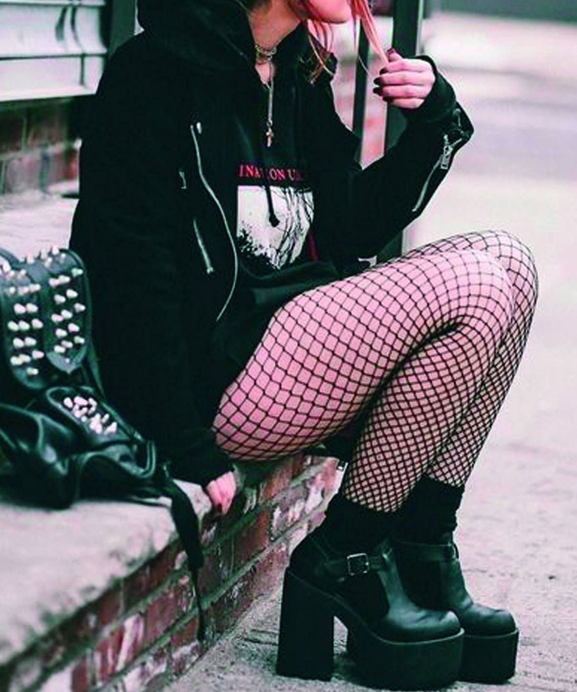

Here are some punk clothing styles

The punk lifestyle is not just music, but a way of being that rejects imposed rules and embraces personal freedom. It is expressing oneself without fear, breaking the mould and vigorously defending one's ideas. Punk is street, sweat, energy and creativity: an attitude that turns everyday life into a cry against homologation. It is not the appearance that counts, but the substance: the desire to live authentically, to say no to injustice and yes to one's own inner voice. Being punk means choosing who you are, every day, without compromise.